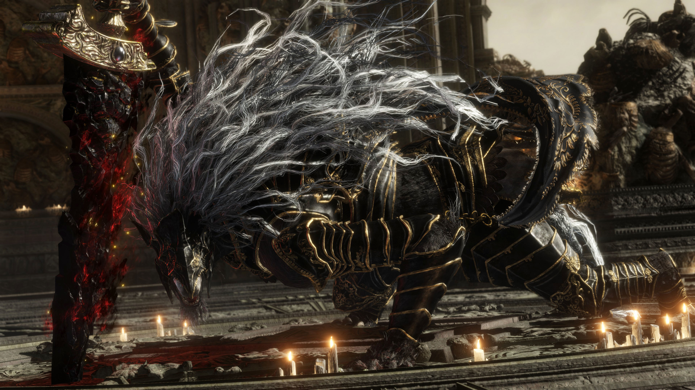
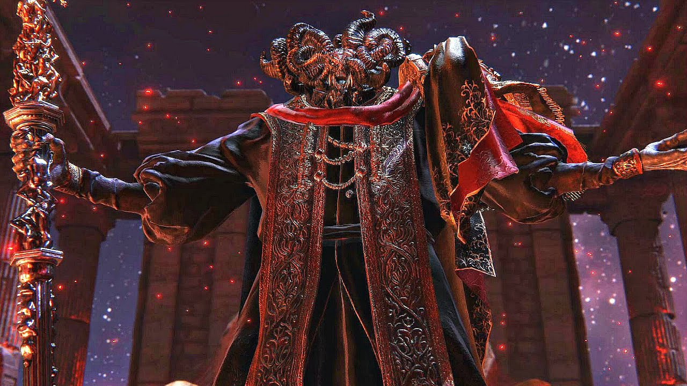
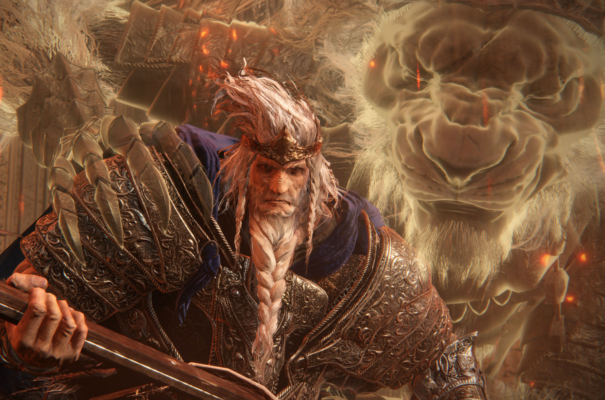
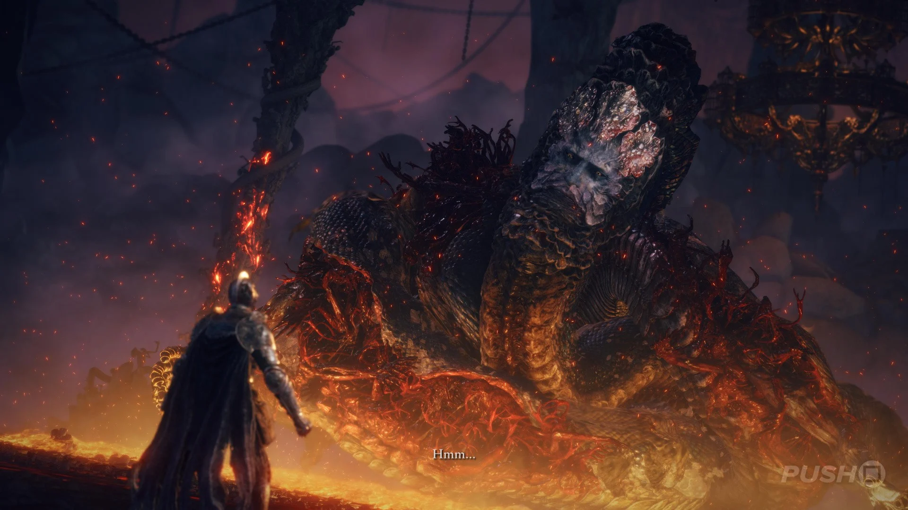
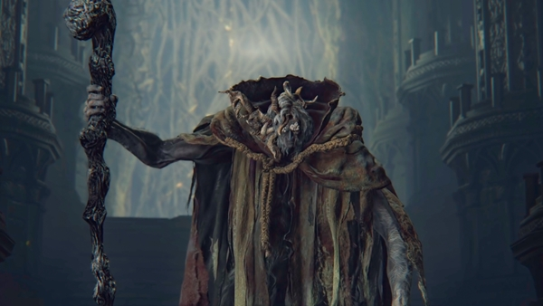
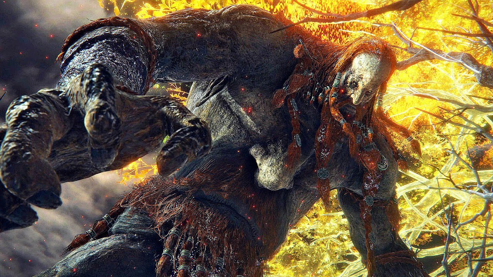
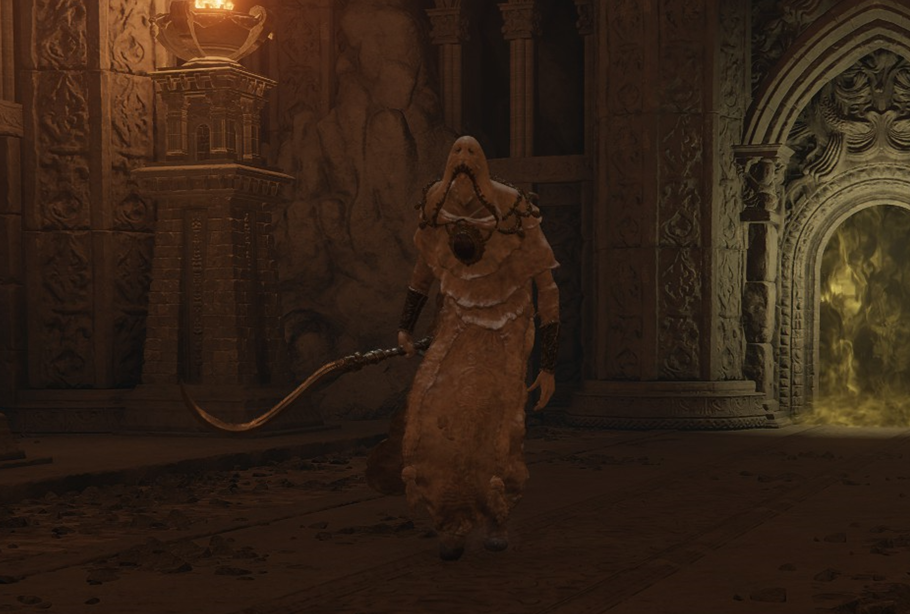

A dificuldade de Elden Ring
Elden Ring é conhecido por sua dificuldade elevada e chefes memoráveis. Cada boss apresenta mecânicas únicas que exigem estratégia, paciência e habilidade do jogador.
Nesta página, apresento o top 10 dos bosses mais difíceis do jogo, baseados na minha experiencia com o jogo e no nível de desafio que oferecem.
Ranking dos Bosses Mais Difíceis
-
Top 1 - Malenia, Blade of Miquella

Malenia é considerada por muitos o boss mais difícil do jogo. Sua habilidade de se curar a cada golpe acertado torna a luta extremamente desafiadora.
Além disso, seu ataque especial, conhecido como "waterfowl dance", pode eliminar o jogador em segundos se não for evitado corretamente. alem de contar com uma segunda fase onde o boss cura toda a vida perdida.
-
Top 2 - Radagon of the Golden Order / Elden Beast

Radagon e Elden Beast formam a batalha final de Elden Ring. A luta exige resistência do jogador, já que são dois chefes seguidos com ataques poderosos e grande quantidade de vida. alem de que radagon pode simplesmente, dar um tapa em seus projeteis.
-
Top 3 - Maliketh, the Black Blade

Maliketh é extremamente rápido e agressivo. Seus ataques reduzem a vida máxima do jogador ate o fim da luta, tornando a batalha intensa e muito punitiva.
-
Top 4 - Mohg, Lord of Blood

Mohg utiliza ataques de sangue e fogo que causam muito dano em área tornando a arena um verdadeiro inferno. Sua segunda fase aumenta ainda mais a dificuldade da luta . alem de sua habilidade impossivel de desviar que ira fazer você gastar algumas poçôes.
-
Top 5 - Dragonlord Placidusax

Placidusax é um dragão colossal com ataques elétricos devastadores. Seus teletransportes e golpes em área tornam o combate imprevisível.
-
Top 6 - Godfrey, First Elden Lord

Godfrey combina força bruta com ataques extremamente rápidos. Em sua segunda fase, torna-se ainda mais agressivo , perigoso e brutal.
-
Top 7 - Rykard, Lord of Blasphemy

Rykard possui ataques gigantescos e muito dano em área e de queimaçâo. Mesmo utilizando a arma especial da luta, o combate continua desafiador.
-
Top 8 - Morgott, The Omen King

Morgott é um boss rápido e imprevisível, utilizando ataques mágicos e físicos ao mesmo tempo. Sua movimentação dificulta bastante a luta.
-
Top 9 - Fire Giant

O Fire Giant possui uma enorme quantidade de vida e ataques capazes de eliminar o jogador rapidamente. A segunda fase aumenta ainda mais o caos da batalha com ele rolando para todos os lados.
-
Top 10 - Godskin Apostle

Godskin Apostle é conhecido por seus ataques rápidos e alcance elevado. mais o real problema é sua capacidade de sempre te atacar quando voce tenta se curar.
Por que são difíceis?
- Alta velocidade de ataque
- Dano extremamente elevado
- Mecânicas únicas (cura, fases múltiplas)
Malenia é considerada por muitos o boss mais difícil do jogo. Sua habilidade de se curar a cada golpe acertado torna a luta extremamente desafiadora.
Além disso, seu ataque especial, conhecido como "waterfowl dance", pode eliminar o jogador em segundos se não for evitado corretamente. alem de contar com uma segunda fase onde o boss cura toda a vida perdida.
Links
Site oficial do elden ringVoltar ao topo